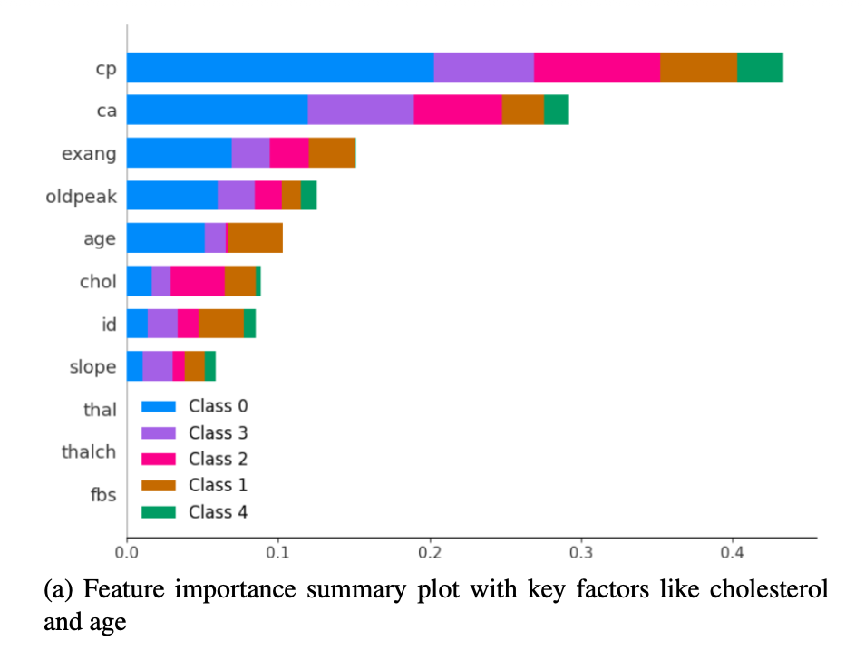
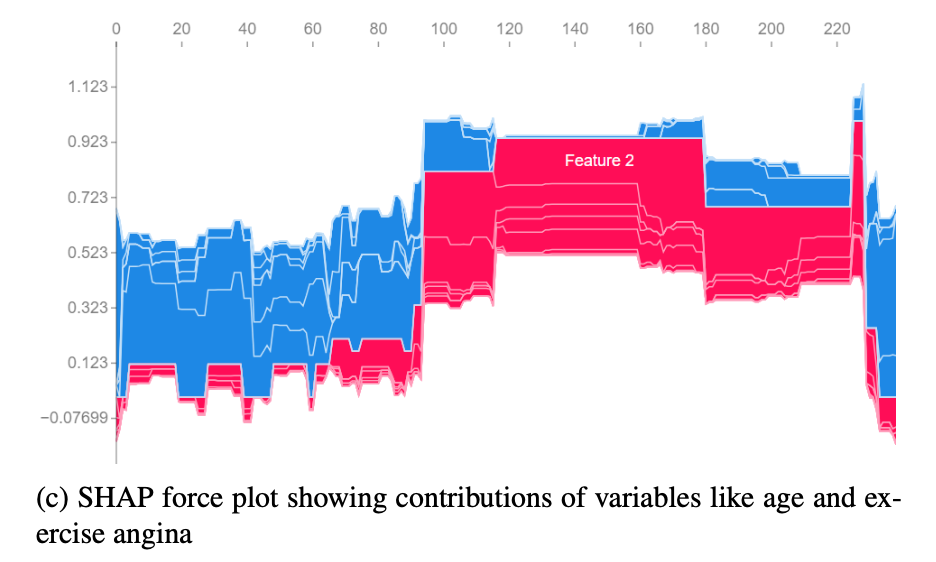
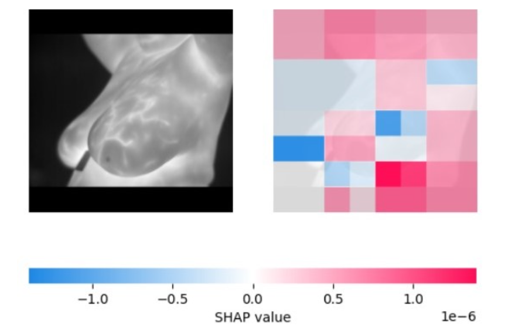

Thapar University, Patiala
Incoming MS in Data Science, Columbia University
6 publications across Medical AI, NLP, Computer Vision, and Multimodal Learning.
+ 1 paper under publishing at IMVIP (cardiovascular disease prediction).
CVD is leading mortality cause in elderly — traditional risk models miss age-specific comorbidities
Ensemble ML (RF, SVM, LR, DT) with SHAP for interpretable age-specific risk prediction
Age-specific cardiovascular risk factors via SHAP — personalized assistive framework for elderly care


Mammography fails in dense tissue, involves radiation — no interpretable complementary screening exists
Fine-tuned VGG16 on thermal imaging with quadrant segmentation + SHAP pixel attribution
First quadrant-wise thermal analysis with pixel-level XAI — clinicians can validate AI reasoning
